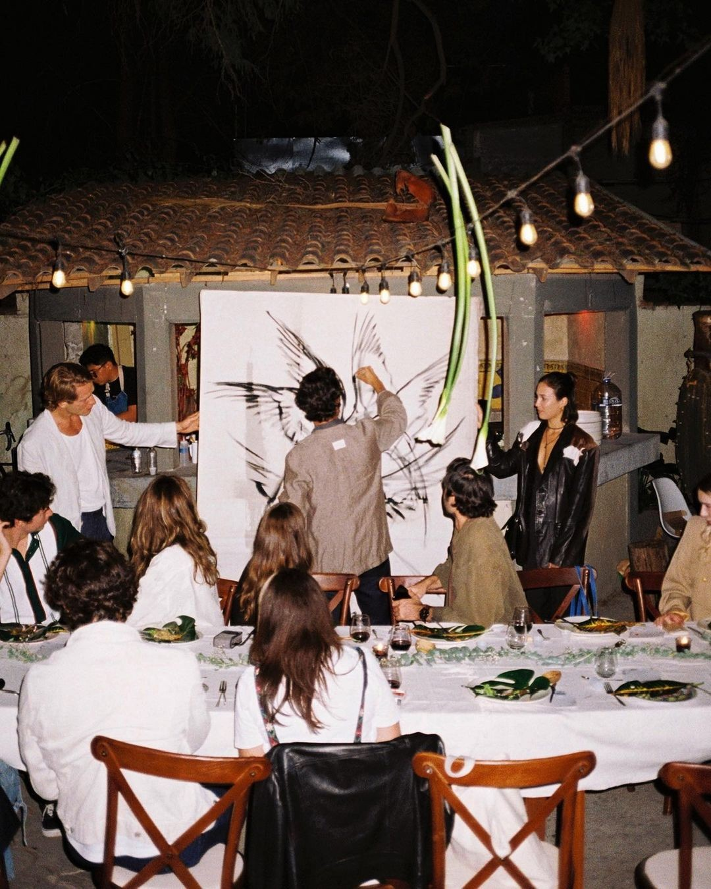

Samūha, meaning “gathering” in Sanskrit, was born from a simple belief: dining should be more than eating; it should be a memory. We saw a world where chefs remained hidden behind kitchen walls and diners scrolled through menus that felt identical. Our aha! moment was to reimagine dining as a moving theatre, a nomadic stage where culinary storytellers step into the spotlight.
By partnering with independent chefs and transforming underutilised spaces into ephemeral dining stages, we craft immersive, multi-sensory journeys that go beyond food. No two shows are ever the same, but each one leaves behind a lasting connection.
MISSION
To represent the hidden qualities of the world’s top culinary creators by showcasing their art to the most discerning diners who crave quality.
VISION
To be the global leader in luxury culinary experiences, built on the principles of artisanship, innovation, and community.

Before You Join the Table
An intimate, chef-led dining show. You’ll share a set, multi-course meal that blends storytelling, music, and a few interactive moments. Think 2.5 to 3 hours, limited seats, a surprise setting, and a menu built around a theme. It feels personal, unhurried, and a little theatrical.
No. The menu is revealed at the table to keep the experience playful. We can accommodate common dietary needs with 72 hours’ notice.
Absolutely. Solo guests are very welcome and often seated with like-minded diners. You can book a maximum of 2 seats per booking, and pairs are seated together. If you’d like to bring your close ones or plan something larger, we can arrange a private show – just contact us.
Each show happens at a secret venue in the city. We share the general area when you book and send exact coordinates and access details 24 hours before the event. Some venues are outdoors or in heritage spaces. If you have accessibility needs, tell us in advance so we can prepare the best route and seating.
You’ll receive the dress code in your invite once your booking is confirmed.